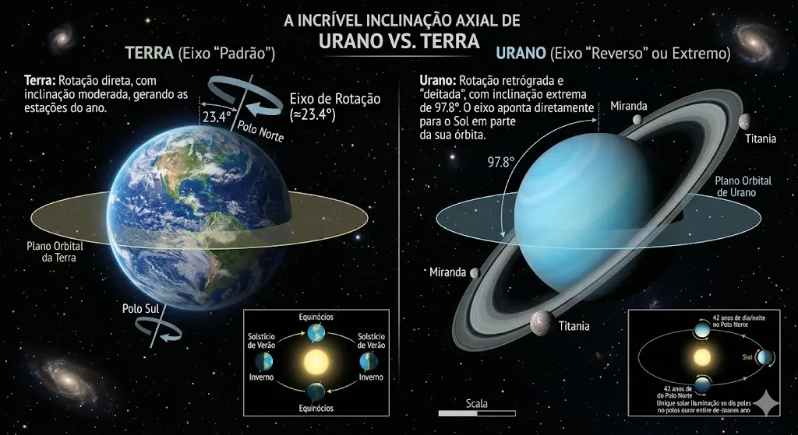
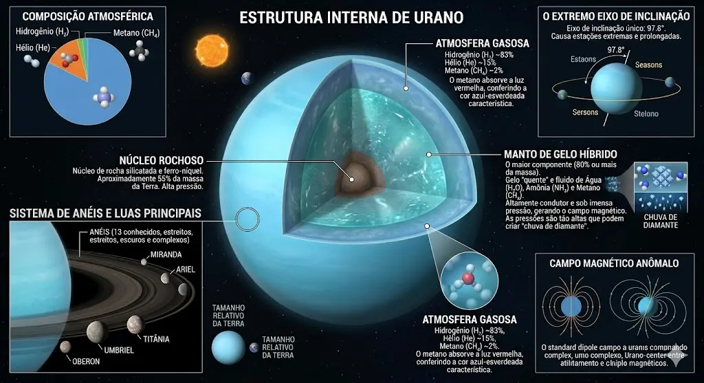

🧊 Urano: O Planeta Inclinado
Urano é um gigante gasoso que se destaca por sua inclinação extrema, girando praticamente de lado em relação ao plano orbital. Essa característica cria estações prolongadas e incomuns.
Sua atmosfera é composta por hidrogênio, hélio e metano, sendo este último responsável por sua coloração azul-esverdeada característica.
Um eixo fora do padrão
A inclinação de Urano sugere que o planeta pode ter sofrido uma colisão massiva no passado, alterando completamente sua rotação.

🌌 Estrutura e Dinâmica
Urano possui uma estrutura composta por gases e elementos gelados, sendo classificado como um gigante de gelo. Seu interior apresenta temperaturas extremamente baixas.
O planeta também possui anéis e diversas luas, embora menos visíveis do que os de Saturno.
Frio e estabilidade aparente
Apesar de sua aparência calma, Urano apresenta dinâmicas internas complexas que ainda são objeto de estudo.
